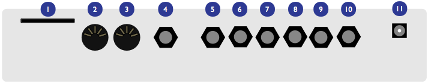
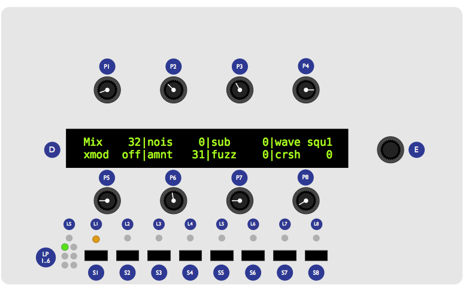
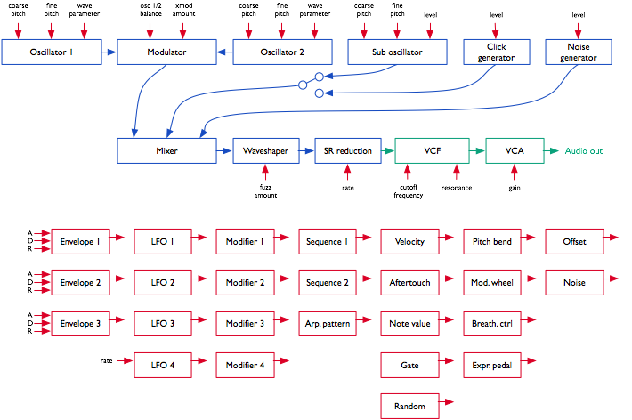
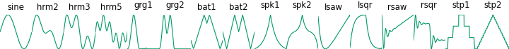

Getting started
Overview
You have successfully built Ambika, Congratulations!
Ambika is a multi-voice hybrid synthesizer. You can play it as a 6-voice polysynth, an ensemble of 6 monosynths, or anything inbetween due to its easily configurable voicing architecture.
The sound generation is hybrid, combining the warmth and sonic character of a true 4-pole analog filter, with the large array of waveforms offered by digital wavetables, fm and phase modulation. The digital control of the analogue filter and VCA also means a very large palette of modulation possibilities.
Some of the key features of Ambika include:
- 6 voices with individual outputs.
- 2 digital oscillators per voice, with 36 oscillator algorithms/wavetables.
- 1 sub-oscillator, also configurable as a transient generator.
- Pre-filter overdrive and bit-crushing effect.
- Analog 4-pole filter (or 2-pole multimode filter depending on the type of voicecard used) and VCA.
- 3 ADSR envelopes, 3 patch-level LFOs, 1 voice-level LFO.
- Modulation matrix with 14 slots and 4 modulation modifiers.
- 1 arpeggiator, 1 note sequencer and 2 step sequencers per part.
- Flexible mapping of the 6 voices. A single patch with 6 voice-polyphony, 6 independent mono parts, 2 layered patches with 3-voices polyphony, a 3-voice unison bass line on the lower half of the keyboard with a 3-voice unison lead on the upper half... all are possible!
- SD-card storage allows the storing of a life-long of patches, programs and multis, along with the history of editing operations for undo/redo.
Connections

The following connectors are available on the rear panel:
- 1: SD-card slot. Insert here a SD-card (SDHC supported), FAT16 or FAT32 formatted. At the exception of system settings, everything Ambika needs to store goes on the SD-card. A capacity of at least 256 MB is recommended.
- 2: MIDI in connector. This input should be connected to the MIDI output of a computer MIDI interface, master keyboard, sequencer...
- 3: MIDI out connector. This output is by default used as a MIDI-thru, but you can also use it to transmit the notes generated by the Ambika sequencer, arpeggiator ; or to do SysEx dumps of patches.
- 4: Mix line output. This audio output contains a mix of all voices.
- 5, 6, 7, 8, 9, 10: Individual outputs.
- 11: AC power jack. Use a 9V AC, 1A power source. Higher voltage will cause more heating of the voltage regulators and shorten the lifespan of the module.
Some terminology...
A voice is a physical monophonic sound production device, consisting of digital oscillators, CV sources, an analog VCF and a VCA. A voice is only capable of producing a single-note sound. Ambika contains 6 voices, each of them being a physically different circuit board.
A part is one or many voices sharing the same synthesis settings. Ambika can manage up to 6 parts. Each part stores its own synthesis, arpeggiator and sequencer settings. Each part listens to a MIDI channel, and is assigned a range of keys on the keyboard.
Each of the 6 voices in Ambika needs to be linked to (assigned to) a part. This is a bit like showing each musician (voice) in an orchestra which staff they must play on a musical score! If you assign the 6 voices to the same part, Ambika will behave like a classic monotimbral polysynth. If you assign each voice to a different part, Ambika will behave like 6 independent monophonic synths. If you want to play a bassline on the lower part of the keyboard, and a brass riff on the upper part of the keyboard, you need to use two parts: one part with 1 voice for the bass, and a second part with 5 voices for the brass sound.
A patch is a specific combination of synthesis settings stored into a part.
A program consists of a patch, and additional sequencer/arpeggiator settings.
A multi stores 6 programs (one for each part of Ambika) along with the mappings between voices, parts, midi channels and keyboard range. This is a complete snapshot of the Ambika configuration!
Controls and navigation

- The 2x40 characters LCD display D displays, most of the time, the name and values of the 8 synthesis parameters accessible by the 8 potentiometers P. The parameters are organized as two rows of 4 parameters.
- The clickable encoder E is used to scroll between parameters/pages, or to fine-tune the value of a parameter.
- The 8 LEDs L1...L8 indicate which page is active.
- The 8 switches S1...S8 are used to display synthesis pages. For example, S1 shows the oscillators and mixer page ; S2 shows the filter page, etc.
- The part and voice LEDs LP1...LP6 indicate which part is active (green lights), and which voicecards are currently playing notes (yellow lights).
- The status LED LS is used to visualize the rate of a LFO or the beats in a sequence -- depending on which module you are editing.
Controls
Editing parameters
The Ambika parameters are organized in pages. To jump to a page, press one of the 7 switches S1...S7. Some pages share the same switch ; and you will need to repeatedly press a switch to cycle between those pages. The active page is indicated by the LEDs L1...L7 next to the navigation switches.
The following table lists which page is associated with each switch:
| Switch | Pages |
|---|---|
| S1 | Oscillators, Mixer |
| S2 | Filter |
| S3 | Envelopes and LFOs, voice LFO |
| S4 | Modulation matrix |
| S5 | Keyboard & tuning, sequencer & arpeggiator, sequence editor |
| S6 | Voice and parts mappings, Tempo/clock |
| S7 | Performance, knob assignments |
Each page displays up to eight related synthesis parameters. Each parameter can be edited by turning the knob sitting at its top (for the first row of the display) or at its bottom (for the second row of the display).
Here is an example:
After having powered up the unit, press S1 to bring the oscillators page. L1 lights up in green, and the LCD display shows the following parameters:
Wave saw|para 0|rang 0|tune 0
wave squa|para 32|rang -12|tune 12
You can use the first row of knobs to edit the shape, parameter, range and detune of the first oscillator ; and the second row of knobs to edit the shape, parameter, range and detune of the second oscillator. Observe that when you are turning a knob, the explicit name of the parameter is temporarily shown on the screen:
oscillator 1 |waveform saw
wave squa|para 32|rang -12|tune 12
After a short delay, the four names and values are shown again.
Press S1 again to bring the mixer page. L2 lights up in yellow, and the LCD display shows the following parameters:
Mix 32|nois 0|sub 0|wave squ1
xmod off|amnt 31|fuzz 0|crsh 0
Press S1 again to get back to the oscillators page.
Using the encoder
When Ambika displays a parameters page, the rotary encoder can be used to scroll through the parameters. The name of the active parameter is capitalized. For example, oscillator 1 range is here the active parameter:
wave saw|para 0|Rang 0|tune 0
wave squa|para 32|rang -12|tune 12
Rotate the encoder clockwise to make tune the active parameter, rotate the encoder counter-clockwise to make para the active parameter. If you continue rotating the encoder clockwise, the next page will become active.
Once a parameter is selected (capitalized), click the encoder to edit it. The full name of the parameter is displayed on the screen. The encoder can now be used to increment/decrement the parameter value. Once the value has been set, click the encoder again.
Knob and encoder editing can be combined. Use a knob to rapidly adjust the value of a parameter, and then, while the parameter name is still displayed on the screen, use the encoder to fine-tune the value.
Shortcut. Hold the S8 switch while turning the encoder to increment/decrement values by 8 instead of 1.
Reference
This section describes in details each page and parameter of Ambika.
Voice allocation
This page, accessible by the S6 switch, serves two purposes:
- Selecting the current part.
-
Assigning voices to a part.
Part 1|chan 1|low C-|high G9 voicecard| [1] [2] [3] 4 5 6
The first knob on the upper row is used to select a part. Notice how the LP1...LP6 LEDs indicate by a green light which part is active. All settings on all the other pages apply to the part indicated by this green light.
chan (channel) sets the MIDI channel the active part responds to. Use omni if you want a part to respond to notes from all MIDI channels. Several parts can share the same MIDI channel. This is useful for controlling two patches from the same MIDI controller, in split or dual mode.
low and high set the range of MIDI notes the active part responds to. This can be used to create keyboard splits: set the range of part 1 to C- .. B3 and the range of part 2 to C4 .. G9 ; and set both part 1 and part 2 to listen to the same MIDI channel. The result is that part 1 is played on the lower half of the keyboard and part 2 on the upper half.
The lower part of the screen displays which voices are assigned to the active part. For example, in the display capture shown above, voices 1, 2 and 3 are assigned to part 1. Use the second knob on the lower row to assign/deassign voice 1 and 2 to the active part. Use the third and fourth knobs to assign/deassign voices 3/4 and voices 5/6.
Note that you can assign to a part only voices which are not currently in use by another part. For example, when Ambika boots, voices 1, 3 and 5 are assigned to part 1 ; and voices 2, 4, 6 are assigned to part 2. You will notice that it is not possible to assign voices 2, 4, 6 to part 1 before having de-assigned them from part 2. It might not be convenient, but a voice can only be used by one part, so this constraint has to be enforced!
Assigning/de-assigning a voice causes quite a bit of data shuffling between the processors running each voicecard, and this causes interruptions/reset notes. Don't do that during a live performance!
Shortcut Hold the S1 switch while turning the encoder to change the active part. This works on any page!
Synthesis
Finally, let's get to the real thing! Each voice of Ambika is built according to the diagram drawn below. Obviously, it would be tedious to edit the settings of each individual voice... Instead, you edit parts and all the voices assigned to a part automatically inherit its settings!

Here is a day (or rather a millisecond) in the life of a voice's signal:
- The oscillators 1 and 2 generate digital waveforms, which are digitally combined together using one of the following operations: mix, sync and mix, multiply (ring-modulation), xor, mix and fold, mix and bit-reduce.
- The sub-oscillator (whose pitch is linked to oscillator 1's) is added.
- The click generator generates a short transient/click at the beginning of the note. Note that the sub-oscillator and the click generator cannot be used at the same time. It's bassy-beefy or clicky, not both.
- The output of the modulator, the sub-oscillator/click-generator and a controllable amount of white noise are summed together. You can adjust the balance of each ingredient.
- A controllable amount of fuzzy overdrive is applied to the signal.
- The resulting signal is sample-reduced by a controllable amount.
- The resulting signal is converted to the analog domain by a 12-bit DAC and fed into an analog VCF and VCA.
Each of these sound generation and modification modules have parameters which can be controlled by any of the modulation sources listed below. However, some connections are already "hardwired" (or rather "softwired" in the firmware):
- The oscillators' pitch always tracks the note played on the keyboard. However, this can be disabled by applying a negative modulation (amount: -63) from note to oscillator pitch.
- The filter cutoff frequency always tracks the note. Again, this can be disabled or attenuated by applying a negative modulation from note pitch to cutoff frequency. The rationale behind this choice is that most of the time, you want 1:1 tracking, so this frees up a slot in the modulation matrix for something more interesting!
- Lfo 2 and Envelope 2 are always connected to the filter, their modulation amount being controlled by dedicated parameters on the filter page.
Besides this, it is up to you to route modulations to parameters. By default, the following routings are wired:
| Source | Destination | Amount |
|---|---|---|
| Env 1 | Oscillator 1 parameter | 0 |
| Env 1 | Oscillator 2 parameter | 0 |
| Lfo 1 | Oscillator 1 pitch | 0 |
| Lfo 1 | Oscillator 2 pitch | 0 |
| Lfo 2 | Oscillator 1 parameter | 0 |
| Lfo 2 | Oscillator 2 parameter | 0 |
| Lfo 3 | Mixer balance | 0 |
| Lfo 4 | Filter cutoff | 0 |
| Seq 1 | Filter cutoff | 0 |
| Seq 2 | Mixer balance | 0 |
| Envelope 3 | VCA gain | 100% |
| Velocity | VCA gain | 25% |
| Pitch-bend | Oscillator 1+2 pitch | 2 semitones |
| Lfo 4 | Oscillator 1+2 fine pitch | 2 semitones |
Let us now review the different synthesis parameters.
Digital oscillators (S1)
Wave saw|para 0|rang 0|tune 0
wave squa|para 32|rang -12|tune 12
Each row displays the settings of an oscillator. The parameters are the following:
- wave (waveform): Oscillator waveform family. Contrary to most synthesizers in which waveforms are static, the Ambika waveforms are dynamic and can be continously morphed -- this is why it is more correct to refer to "waveform families" instead of "waveforms".
- para (parameter): Morphing parameter. This morphs the selected waveform into many variations.
- rang (range): Oscillator pitch, from -36 semitones to 36 semitones (relative the pitch of the MIDI note played on the keyboard).
- tune (tune): Oscillator fine tune, from -0.5 semitone (-64) to 0.5 semitone (+64).
The following is a list of all the available waveform families, with some applications and a description of what adjusting the parameter setting actually does.
none: silence
This simply switches off the oscillator. Switching the oscillators off is useful if you want to use the sine-wave produced by the filter's self-oscillation as the sole sound source.
saw: sawtooth
This waveform is perfect for basses and brass sounds. The parameter controls the waveshapping - when its value is increased, an increasingly large section of the waveform is shifted up. This waveform is band-limited. Thus, only a limited amount of aliasing artifacts will be heard when playing high-pitched notes.
square: square wave
The parameter controls the pulse-width. This waveform is perfect for simulating a clarinet, for basses, "hollow" sounds or Depeche Mode-like leads. This waveform is band-limited and only a limited amount of aliasing will be heard when playing high-pitched notes.
You will observe that there is a slight difference in sound when moving the parameter from 0 to 1. To offer the best sound quality, the pulse width = 50% flavor is read straight from a wavetable at full sample rate, while the pulse width > 50% flavor is obtained from two dephased sawtooth waves, evaluated at half the sample rate. For bass sounds, for which aliasing is not going to be a problem, it is recommended to use pwm instead of square to get a beefier sound.
triang: triangle wave
A pure waveform, which serves as a good basis for flute or soundchip-like leads. The parameter controls a kind of waveshapping, clipping the bottom of the waveform. This waveform is band-limited and will still sound fine above C5.
sine: sine wave
A pure and chaste sine wave lost her virginity. At some point she started listening to Nine Inch Nails.
zsaw: phase-distortion sawtooth with filter sweep
This waveform uses phase distortion to recreate a low-pass filtered sawtooth by progressively "pinching" the phase of a sine wave. The parameter controls the brightness of the sound: from a sine wave to a sawtooth, then from a sawtooth to a sawtooth gone through an ugly transistor amp. Good for dirty bass guitar sounds or clavinets.
lpzsaw, pkzsaw, bpzsaw, hpzsaw: resonant filter sweeps on a sawtooth wave.
This waveform family directly simulates the sound of a sawtooth wave processed by a low-pass, peaking, band-pass, or high-pass resonant filter. The parameter controls the cutoff frequency of the filter.
lpzpulse, pkzpulse, bpzpulse, hpzpulse: resonant filter sweeps on a trapezoidal wave.
This waveform family simulates the sound of a trapezoidal pulse wave processed by a low-pass, peaking, band-pass, or high-pass resonant filter. The parameter controls the cutoff frequency of the filter. pkzpulse is particularly good at recreating the dirty, saturated sound, of a sawtooth filtered by the least academic of the 2-pole analog filters.
ztriangle: mystery...
This waveform vaguely evokes two hardsync'ed oscillators -- the parameter controlling their frequency ratio. It may or may not have been used in the Casio CZ-101.
pad: swarm of 4 buzzing detuned sawtooth waves
As the name implies, this waveform made of four stacked sawtooth waves is useful for pads (when a copious amount of filtering is applied) or for buzzing trance leads. The parameter controls the amount of detuning between the four waves. Note that no bandlimiting is happening here, so this thing doesn't sound quite good above C5... but it's doing a perfect job in the bass range!
fm: minimal 2-operators FM
The parameter controls the modulation strength. This oscillator provides the base material for metallic sounds, bells, metallophones, or the next 386 DX hit.
When the fm oscillator is selected, the range parameter plays a slightly different role than usual: instead of controlling the main pitch of the note, it controls the modulator frequency, and has a drastic impact on the timbre.
8bits: bitwise anarchy
A palette of 8-bits sounding waveforms obtained by applying bitwise operations to a basic sawtooth wave (something now known as "biscuiting").
pwm: my first Arduino synth
This waveform is a shamelessly naive square wave. The parameter controls the pulse-width. Contrary to square, this waveform stinks aliasing - but for notes below C2 it is not a real problem: it becomes much more aggressive and "in your face" than square.
noise: filtered noise generator
The parameter controls the frequency of a simple 1-pole low-pass/high-pass filter in which is sent white noise. From 0 to 63, high-frequency content is progressively added. From 63 to 127, low-frequency content is progressively removed. Perfect as a raw material for percussions or sound effects.
vowel: low-tech formant synthesis
Changing the parameter will sweep between different vocal-like sounds (14 vowels and 2 consonants).
Wavetables
The remaining waveform families are wavetables -- collection of single cycle waveforms, synthetic or sampled from real instruments. The parameter is used to smoothly "scan" the wavetable. For example, if a wavetable has 2 waveforms, parameter = 0 plays the first waveform ; parameter = 127 plays the second ; and parameter = 64 plays a mix of both. Wavetables can contain up to 16 waves.
| Wavetable name | Description |
|---|---|
| male | Vocal formants, best played in the lowest octaves |
| female | Vocal formants, best played in the medium octaves |
| choir | Depeche mode-like vocal sound |
| tampura | Single cycle waveforms from an indian tampura note |
| bowed | Transwave extracted from a cello sample |
| cello | Transwave extracted from a less dramatic cello sample |
| vibes | Transwave extracted from a vibraphone sample |
| slap | Transwave extracted from a slap bass sample |
| epiano | Various single cycle waveforms extracted from electric piano samples |
| organ | Various combinations of sine waves, as produced by drawbars organs |
| waves | 16 basic waveforms, ready to be morphed into one another |
| digital | Abstract, PPG-wave style wavetable |
| drone 1 | Abstract, PPG-wave style wavetable |
| drone 2 | Abstract, PPG-wave style wavetable |
| metallic | Single cycle waveforms from classic D50 patches |
| bell | A Depeche mode classic |
| wavquence | Individually addresses each single cycle waveform |
The last wavetable contains all the single cycle waveforms in memory. It is not recommended to scan the parameter with LFOs or envelopes ; but rather to control this from the step sequencer or a random modulation (for the infamous a new sound at each note effect).
Mixer (S1)
Mix 32|nois 0|sub 0|wave squ1
xmod sum|amnt 31|fuzz 0|crsh 0
- mix (osc mix): Balance between oscillator 1 and 2.
- nois (noise): Noise level.
- sub (sub osc): Sub oscillator/transient generator level.
- wave (waveform): Sub oscillator/transient generator waveform (see below).
- xmod (crossmod): Cross-modulation method used to combine the sound of oscillators 1 and 2.
- amnt (amount): Cross-modulation amount.
- fuzz: Amount of overdrive/fuzz applied to the signal.
- crsh (crush): Amount of sample rate reduction (sometimes known as bitcrushing) applied to the signal.
Here is a list of sub-oscillator/transient generator waveforms. The first 6 settings correspond to the sub-oscillator, which is an oscillator of its own, playing always one or two octave lower than the oscillator 1. The next settings disable the sub-oscillator and enable various flavors of transient generators, which will produce a short, clicky sound at the beginning of the note:
- sq1 square sub-oscillator, 1 octave below osc. 1
- tr1 triangle sub-oscillator, 1 octave below osc. 1
- pl1 25% pulse sub-oscillator, 1 octave below osc. 1
- sq2 square sub-oscillator, 2 octaves below osc. 1
- tr2 triangle sub-oscillator, 2 octaves below osc. 1
- pl2 25% pulse sub-oscillator, 2 octaves below osc. 1
- click produces a discrete click which can emphasizes the percussiveness of a note.
- glitch produces a sound similar to that of a skipping CD.
- blow is a burst of noise with a slow attack.
- metal adds a metallic sounding, high-pitched click.
- pop adds a low-pitched discontinuity, useful for spicing up a kick drum.
The crossmod parameter controls how oscillator 1 and oscillator 2 are blended together. The different modulation modes are:
| Mode | Description | What does the xmod parameter controls? |
|---|---|---|
| off | Mixing: Oscillators 1 and 2 are mixed together | nothing |
| sync | Mixing and sync: Oscillators 1 and 2 are mixed together, with oscillator 2's waveform phase-synced to oscillator 1's | nothing |
| ring | Ring modulation: Oscillators 1 and 2 are mixed together, and simultaneously sent to a ring-modulator | balance between the original mixed signal and the ring-modulated signal |
| xor | Xor modulation: Oscillators 1 and 2 are mixed together, and simultaneously sent to a digital XOR cross-modulator | balance between the original mixed signal and the XOR signal |
| fold | Foldback distortion: Oscillators 1 and 2 are mixed together, and sent to a foldback distortion | Amount of foldback distortion |
| bits | Bit reduction: Oscillators 1 and 2 are mixed together, and sent to a bit depth reducer | Amount of quantization noise |
Filter (S2)
Freq 96|reso 0 mode lp
env2 24|lfo2 0
- freq (frequency): Filter cutoff frequency.
- reso (resonance): Filter resonance.
- mode (mode): Filter mode (low-pass / band-pass / high-pass). Note that this setting takes effect only if the SVF filter board is installed. With the standard SMR-4 filter board, the filter is always a low-pass no matter the position of this setting!
- env2 (env2->vcf): Modulation amount from envelope 2 to VCF. If you want to set a negative modulation amount, you can patch env2 to the VCF in the modulations section and ignore this parameter.
- lfo2 (lfo2->vcf): Modulation amount from LFO 2 to VCF. Again, if you want to set a negative modulation amount, you can patch the LFO 2 to the VCF in the modulations section and ignore this parameter.
Envelopes and LFOs (S3)
Ambika has three ADSR envelopes, three part LFOs and one voice LFO.
A part LFO is shared among all voices assigned to a part and is used for creating global sweeps, tremolo effects, etc.
A voice LFO is specific to each voice, and there will actually be a small amount of detuning/dephasing between them, for a richer sound.
Consider the example of a guitarist playing a guitar through a tremolo pedal, and applying a vibrato on a particular note. If you want to program something similar, you will use the voice LFO for the vibrato (because it is slightly different and desynchronized for each individual note) ; and you will use a part LFO for the tremolo, since it uniformly affects all the notes. Another example: you have found the perfect combination of LFOs to create a trancey gated strings sound. The last thing you want is to have each note of the chord triggered at a slightly different instant due to difference in timings when the chord is played. You need a part LFO for the gating effect. A voice LFO is good for richness and randomness, a part LFO is good for sync'ing things up.
As a result, only the voice LFO can be controlled in the modulation matrix (because it can be controlled by velocity, aftertouch, etc. -- all kind of things that might be different for each played note) ; and only the part LFOs can be synchronized to tempo.
This part LFO vs voice LFO distinction sounds confusing, and there is actually little documentation about it. Most classic analog synthesizers do not have one LFO circuit per voice, so their behaviour is accurately simulated by the use of part LFOs. Some VAs, like the access Virus, use voice LFOs. On the Waldorf Blofeld, each LFO is a voice LFO by default and can be turned into a part LFO through the use of the sync setting.
Lfo/eg 1|rate 24|wave tri|trig free
attk 0|deca 40|sust 20|rele 60
- lfo/eg: Selects the LFO / envelope generator to edit. The settings shown on the page are relative to the selected LFO / EG. If you are wondering if there is such thing as a "filter envelope" and "VCA envelope"... Yes, by default env2 is mapped to cutoff and env3 to the VCA ; but this can be changed in the modulation matrix by patching pranksters.
- rate: LFO rate. The first values (1/1 to 1/96) are note values relative to the global tempo (or to an external MIDI clock). For example, if set to 1/4, the LFO will play one cycle every quarter note. The other values are increasing frequencies, from 0.06 Hz (0) to 100 Hz (127).
- wave (waveform): LFO waveform. A list of LFO waveforms is given below.
- trig (trigger): LFO/envelope synchronization mode. free leaves the LFO free-running. env->lfo resets the phase of the LFO everytime a new note is played. lfo->env retriggers the corresponding envelope generator everytime the LFO completes a cycle.
- attk (attack): Envelope attack time, from 1ms to 66s.
- deca (decay): Envelope decay time (same times as for attack).
- sust (sustain): Envelope sustain level.
- rele (release): Envelope release time (same times as for attack).
Here is a list of LFO waveforms:
- tri: Triangle.
- sqr: Square.
- s&h: Sample & hold (random value).
- ramp: Ascending ramp (use a negative modulation amount in the modulation matrix to get a descending ramp modulation).
- sine to stp2: Wavetable LFOs. These LFOs are read from a wavetable containing many interesting waveshapes.

Voice LFO (S3)
rate 24|wave tri
_
- rate: LFO rate. The voice lfo cannot be synchronized to the tempo. The frequency ranges from 0.06 Hz (0) to 100 Hz (127).
- wave (waveform): LFO waveform.
Modulation matrix and modifiers (S4)
Modul. 1|srce env1|dest prm1|amnt 0
modif. 1|in1 lfo1|in2 lfo2|oper off
The upper part of this page allows the routing of up to 14 modulation sources to synthesis parameters. The first knob is used to select one of the 14 virtual "modulation patchcords", while the other knobs on the first row are respectively used to edit its source (srce), destination (dest), and the attenuation amount (amnt).
For example, this line:
Modul. 4|srce env3|dest vca|amnt 63
Indicates that the third envelope is routed to the VCA gain.
The modulation sources are the following:
- env1, env2, env3: ADSR envelopes.
- lfo1, lfo2, lfo3: Part LFOs (bipolar).
- lfo4: Voice LFO.
- mod1, mod2, mod3, mod4: Modifiers (see next section).
- seq1, seq2: Step sequences 1 & 2.
- arp: Arpeggiator gate pattern.
- velo: Note velocity.
- aftr: Note aftertouch.
- bend: Pitch-pend wheel (bipolar).
- mwhl: Modulation wheel.
- whl2: Modulation wheel 2, Joystick negative Y axis or Breath controller.
- pdal: Expression pedal.
- note: MIDI note number (bipolar).
- gate: Keyboard gate (null when the key is released).
- nois: White noise sampled at 1kHz.
- random: Random value, updated every time a note is retriggered.
- [256]{style="text-align:center;"} to [4]{style="text-align:center;"}: Boring constant values.
The modulation destinations are the following:
- prm1, prm2: Oscillator 1&2 parameters.
- osc1, osc2: Oscillator 1&2 pitch.
- \~1+2: Oscillator 1&2 coarse pitch.
- vibr: Oscillator 1&2 fine pitch.
- mix: Oscillator balance.
- xmod: Oscillators cross-modulation amount. This has no effect when the off or sync mixing modes are selected.
- nois: Noise amount.
- sub: Sub-oscillator amount.
- fuzz: Fuzz amount.
- crsh: Sample-rate reduction amount.
- freq: Filter cutoff.
- reso: Filter resonance.
- attk: Envelopes attack time.
- deca: Envelopes decay time.
- rele: Envelopes release time.
- lfo4: Voice LFO rate.
- vca: VCA gain.
One thing that requires a bit of clarification is the notion of bipolar modulation source. Let's take an example. We have a triangle LFO mapped to the filter cutoff, with a modulation amount of 30. If the cutoff is set to 80, the actual value of the cutoff will oscillate between 50 (80-30) and 110 (80+30). On the other hand, if we have an envelope mapped to the cutoff with a modulation amount of 20, the cutoff will go from 80 to 120 (80 + 2 * 20), then down to 80 after the release. This is something to remember if you want to do PWM for example. If you set the PWM modulation amount to 40, you also have to set the oscillator parameter value to 40, so it will oscillates between 40-40 = 0 and 40+40=80. Otherwise, it will spend half of the time stuck at 0. But this makes things nicer for vibrato, tremolo, wah-wah or growl effects!

LFOs, pitch-bend and MIDI note number modulations are bipolar. If you are used to electronics/Modular speak, it is equivalent to say that the LFOs are always "AC-coupled" instead of "DC-coupled".
Another thing worth noting is that the modulation amount of the last patch in the modulation matrix is always attenuated by the modulation wheel. Let us say that you have connected patch 14 from LFO 4 to the oscillators fine pitch (actually this is done by default in the init patch!):
Modul. 14|srce lfo4|dest vibr|amnt 16
This modulation will be applied with an amount proportional to the mod-wheel position - by default it will not be active until you start moving the modulation wheel, and to get it at full strength, you will have to push the modulation wheel to the max. In the modular synth world, you would have obtained the same effect by patching the LFO at the signal input of a VCA, the joystick at the control input of the VCA, and routed the resulting signal to the exponential FM input of the VCO. Pheww!
The lower page of the modulation/modifiers page allows the combination of up to 4 pairs of modulation sources to create new modulation signals. The first knob on the bottom row is used to select one of the 4 modulation modifiers, while the other knobs on the lower row are respectively used to edit the two inputs of the modulation modifier (in1 and in2), and the operation (oper) to apply.
modif. 1|in1 lfo1|in2 lfo2|oper prod
In the example above, the modulation source mod 1 is defined as the product of lfo1 and lfo2. The following operations are available:
- off no operation.
- add adds the values of the two modulation sources.
- prd computes the product of the two modulation sources.
- attn computes the product of a bipolar version of the first source, and the second source.
- max takes the maximum of the two sources.
- min takes the minimum of the two sources.
- xor computes the bitwise XOR of the two sources.
- greater or equal outputs a large value if source 1 is above soure 2, 0 otherwise.
- less or equal outputs a large value if source 1 is below soure 2, 0 otherwise.
- qtz outputs the value of in1 quantized into a number of levels defined by in2. For example, if you set a constant value (say = 4) as in2, the modulation source in1 will be quantized into 4 discrete steps, as if it was processed through a bit-reducer! This is useful for creating pseudo S&H effects.
- lag outputs the value of in1 filtered by a lowpass filter whose cutoff frequency is set by in2. For example, if you use a constant value (say = 4) as in2, the modulation source in1 will be strongly low-pass filtered. This is very useful for smoothing a square or S&H lfo!
Keyboard and sequencing
Keyboard and tuning (S5)
Volu 120|mode poly|lega off|port 0
octv 0|tune 0|sprd 0|raga equa
- volu (volume): Part volume. Note that the volume attenuation is done by scaling the value of the VCA control signal - causing a potential loss of resolution in the shape of the VCA envelope.
- mode: Polyphony handling. When this is set to mono, all voices assigned to this part are simultaneously played in unison, and you cannot play chords (only the most recently played note is heard). When this is set to poly, the notes you play are dispatched to the voicecards. Obviously, the polyphony is limited by the number of voices assigned to the edited part! Finally, 2x unison works like the polyphony mode except that every time you play a note, it is played by 2 voices - this effectively divides the polyphony by two.
- lega (legato): Legato mode on/off. This setting has an effect only in mono mode. This option specifies how the part will interpret overlapping notes. When legato is off, the envelope retriggers everytime a new note is played, and the portamento is always applied. When legato is on, the envelope retriggers only when the new note does not overlap with the previous one, and the portamento triggers only on overlapping notes.
- port (portamento): Portamento time. This setting has an effect only in mono mode.
- octv (octave): Octave shift. Use this to transpose a part by a given number of octaves. Note that if a note is playing when while this setting is changed, it won't be affected.
- tune: Part tuning. Changes the tuning of the part by +/- 1 semitones.
- sprd (spread): Voice detune. Use this setting to introduce an artificial detuning between all the voices allocated to this part. This can be used to create very thick leads or basses in mono mode, or to add more depth to strings/pads sounds in poly mode.
- raga: Scale/keyboard mapping.
The different scales/keyboard mappings are:
| Name | Description |
|---|---|
| equal | Equal temperament |
| just | Just intonation (frequency ratios to C are rational numbers) |
| pythagorean | Pythagorean scale |
| 1/4 eb | E and B are 1/4 tone lower |
| 1/4 e | E is 1/4 tone lower |
| 1/4 ea | E and A are 1/4 tone lower |
| bhaira ... rasia | A bunch of ragas of the Maihar gharana . Note that it is not possible to play notes outside of the raga - if you attempt to do so, the previously played note will be retriggered. The suggested mode of operation is to find out which keys are active in the raga, and improvise with them! |
Sequencer and arpeggiator settings (S5)
Each part of Ambika has a sequencer / arpeggiator. The sequencer consists of:
- 2 step-sequences, up to 32-step long, which can be freely routed to any modulation source in the modulation matrix.
- 1 note pattern, up to 32-step long.
All parts follow the same global clock, which can be set to a fixed BPM or synchronized to an external MIDI clock. However, since polyrythmy can be fun, each part can be synchronized to a different subdivision of the MIDI clock and use a different step-sequence / pattern length.
3 sequencing modes are available - they define how notes played on the keyboard are translated into the notes played by the voices:
- step seq: Only the step sequencers (modulation sources) are running. The arpeggiator and note pattern are disabled - thus only notes actually played on the keyboard are heard.
- arpeggio: The notes played on the keyboard are not directly heard, instead, they are arpeggiated.
-
pattern: Holding a key triggers the note pattern programmed in the sequencer. The pattern is played at its original pitch if the held key is C4 (midi note #60). Otherwise, the pattern is transposed.
A/sq step|dire up|rang 1|patt 1 grid 1/16|len1 16|len2 16|lenp 16
-
a/seq (arp/seq): Arpeggiator/sequencer mode.
- dire (direction): Arpeggiator direction. The available options are up, down, up and down, random, played (which follows the order in which the notes have been played on the keyboard) and chord (which retriggers the whole chord at each step).
- rang (range): Arpeggiator direction.
- patt (pattern): Arpeggiator rythmic pattern.
- grid: Step duration. The default setting, 1/16 (one sixteenth note or one semiquaver per step) corresponds to the default setting of Roland's x0x boxes. For programming a pattern in triplets, use 1/12 and set the pattern duration to 12 steps. You can also use this for programming SID-style rapid-fire arpeggios.
- len1 (seq1 len): Length (in steps) of the first step sequence.
- len2 (seq2 len): Length (in steps) of the second step sequence.
- lenp (patt len): Length (in steps) of the note pattern.
Let us now discuss the most devilish, confusing thing about Ambika sequencer: sequencer memory sharing. Ambika only has memory for 16-steps long patterns. Yet, the len1, len2, lenp lengths can go up to 32. How is it possible? Simply by reusing steps from one pattern into the other!
For example, if you set the step sequence 1 length to 18, the last 2 steps of step sequence 1 and the first 2 steps of step sequence 2 will store the same value. If you set the step sequence 1 and 2 length to 32, the last 16 steps of step sequence 1 will be the first 2 steps of step sequence 2 and reciprocally. When you set the notes sequence length to 18, the first 4 steps of step sequence 1 will be scrambled with apparently random data from the note sequence.
So remember: as soon as one of sequence 1 or sequence 2 exceeds 16 steps they will scramble each other ; and as soon as the note sequence exceeds 16 steps it will scramble the step sequences. Whether you will prudently avoid using the scrambled sequence or take creative advantage of this scrambling is up to you!
Sequence editor (S5)
This page shows the note pattern and the step sequences 1 & 2.
| note |velocity |stepseq 1|stepseq 2
01|. C4 |. o100 |. 255 |. 0
- The first column displays the step number. Use the encoder to scroll through the sequence.
- The second column displays the note number, editable by the first knob of the upper and lower rows.
- The third column displays the note velocity, editable by the second knob of the upper and lower rows. Turn the knob completely counter-clockwise to mute a step, and completely clockwise to enter a note at full velocity. Turn the knob to a middle position to enter a tie/slide.
- The fourth and fifth columns display the value of the step sequence 1 and 2, editable by the third and fourth knobs of the upper and lower rows.
What about the dots shown in some columns? They indicate the start of the sequence. For example, if the note sequence is 16 steps long, but the step sequence 1 is only 5 steps long, you will see a dot on step 6, 11 and 15 to remind you that the step sequence 1 "cycles" over 5 steps only.
Trivia: the longest non-repeating pattern you can build with Ambika is 20677 steps long (set sequence 1 to 23 steps ; sequence 2 to 29 steps ; and the note sequence to 31 steps). With a clock speed of 1/16 and a BPM of 86, the sequence would last for 1 hour!
Multi settings
These settings are not related to a specific part. They are saved (along with each part's individual settings) in a multi.
Clock settings (S6)
Bpm 120|groo swin|amnt 0|ltch 0
_
- bpm is the master tempo, in beats per minute. Use ext to sync to an external MIDI clock source.
- groo (groove): groove template. The options are swing (uneven distribution of pairs of 1/8th notes), shuffle (uneven distribution of pairs of 1/16th notes), push (push the beat), lag (sloppy drummer!), human (humanization) and monkey (humanization + shuffle). This setting only has an effect when amnt is set to a non-zero value.
- amnt (amount): amount of groove to apply.
- ltch (latch): clock latch release time. This parameter controls the number of beats during which the internal clock continues running after you have released all keys. This allows the internal arpeggiator or sequencer to "keep counting" for a while after you have released all keys from the keyboard. When this setting is set to 0 and the arpeggiator is on, every time you release the keys to play a new chord, the internal clock stops and the arpeggiator/sequencer is restarted. You might like this effect (many vintage synths work this way), but it might sound a bit strange to have the "flow" of the sequence broken at each chord change. When the clock latch is set to 1 beat, the "flow" of the clock and arpeggiator are preserved as long as your chord changes are spaced by less than 1 beat.
Performance page (S7)
Para 0|freq 96|para 0|freq 96
env2 27|volu 120|env2 24|volu 120
This page allows 8 parameters from different pages and for different parts to be displayed together on the same page. Observe that when a parameter is edited, the part number part is shown on screen:
pt 1 oscillator 1 |waveform saw
wave squa|para 32|rang -12|tune 12
A particular quirk of this page is the specific function assigned to the encoder. Press it to simultaneously send a C4 note to all parts. Press it again to send a note off message to all parts. This allows Ambika to be used without a MIDI keyboard. While a note is being played through this mean, you can turn the encoder to transpose all parts up and down.
To select the parameters/parts shown on the performance page, press S7 again to bring the customization page:
performance page customization
knob 1|part 1|oscillator 1 parameter
Use the first knob to select the index of the knob you want to customize. Use the second knob to select a part number. Use the third and fourth knobs, or the encoder, to scroll through the list of parameters.
The library
Everything related to loading/saving patches, multi, etc. is done on this page. The data is stored on a SD card (SDHC cards are supported) formatted in FAT16 or FAT32 format, inserted at the back of Ambika. In case the SD card is incorrectly formatted, incorrectly inserted, or damaged, the following text will be displayed every time you try to display the library page:
/!\ SD card I/O error
ok
Press S8 to continue and try blowing on the SD card connectors.
If the card is correctly inserted and formatted, the main library page will be displayed:
pt 1 program .A000 junon
| init|send|save|versions more|exit
The first row displays the following information:
- pt 1 program is the current "object", that is to say the kind of thing you want to load/save from/to the memory card. In this case, you will be browsing the list of programs and they will be loaded into part 1.
- A000 indicates the bank and object number. Banks are identified by a letter from A to Z ; objects are identified by a number from 000 to 127. The dot before A000 indicates that the version in memory is different from the version stored on the card.
- junon is the object (here a program) name.
The second row is a list of commands. Each command is associated with a switch. For example, S2 performs the init command, S3 the send command, and S8 the exit command. To quit the library page, you thus have to press S8 (exit command).
Selecting an object
Press S1 to repeatedly cycle through the different types of items that can be loaded/written from/to the memory card:
- pt N patch will load/save all the sound synthesis settings, but not the sequencer/arpeggiator parameters of the Nth part.
- pt N sequence will load/save all the sequencer/arpeggiator settings of the Nth part.
- pt N program will load/save all the settings of the Nth part (synthesis, arpeggiator and sequencer).
- multi will load/save all the settings of all parts.
Remember that you can hold S1 while turning the encoder to change the active part.
Ambika can store 3328 (26 banks of 128) patches/sequences/programs/multis.
Loading programs/multis/sequences/patches
Turn the encoder to move to the previous/next program. Remember that you can hold S8 while turning the encoder to scroll faster in the list. To change the current bank:
- Click the encoder. The bank letter starts blinking.
- Turn the encoder to select a bank.
- Click the encoder when you are done.
Reinitializing programs/multis/sequences/patches
Press S2 (init command) to reinitialize or randomize the select object. This brings the following confirmation page:
pt 1 program [ randomize ]
yes | no
Turn the encoder to select an action (randomize will replace all settings by random values; while initialize will replace all settings by the values they had at startup). Press S7 to confirm, or S8 to cancel the initialization.
Dumping programs/multis/sequences/patches as SysEx
Press S3 (send command) on the library page to send the selected object on the MIDI output, encoded in SysEx messages. Note that programs are sent as 2 messages (1 block with synthesis settings and 1 block with part settings) ; and multi are sent as 13 messages ; so you need to set your SysEx Librarian program to receive many messages.
Saving programs/multis/sequences/patches
After having selected with S1 which object type you want to save (multi, program, etc.), press S4 (save command).
pt 1 program .A000 junon
save|cancel
Before saving a program/multi/sequence/patch, its bank letter, number and name must be set. Use the encoder to increment/decrement the value or letter at the cursor. To move the cursor, click the encoder, turn it to move the cursor, and click it again.
When you are done, press S7 (save command). If you want to cancel the operation, press S8 (cancel command).
A warning will be displayed in case the memory card is damaged, full, incorrectly formatted, or just needs a little blow on its connectors.
Note that when a patch is overwritten, a backup copy of the previous version is kept. You can use a SD-card reader on your personal computer to remove the latest version of the patch and restore the backup copy (Sorry... Ambika does not come with its own version of Norton Commander).
Clipboard and version manager.
Press S5 (versions command) to bring the version manager.
pt 1 program version 0
copy|swap|paste << | >> |keep|exit
The following commands are available for the select object (part 1 program in the example given above):
- copy (S1) copies the current item to a clipboard. You can use it to temporarily hold in memory a version of a patch, or to copy a patch from one part to another.
- swap (S2) exchanges the content of the clipboard with the current item. This allows you to quickly go back and forth between two versions of a patch.
- paste (S3) replaces the current item by the content of the clipboard. Note that there are actually 4 clipboards, one for patches, one for multis, one for programs and one for sequences.
- << (S5) reverts the current item to its previous content. This works like the undo function available on most computer software. For example, if you create an amazing patch, and then load by mistake a preset on top of it, you can use this function to go back in time and retrieve your creation.
- >> (S6) works like a redo command. You can use it to cancel an undo command and move forwards in the versions list.
- keep (S7) saves the state of the current item on the undo stack, so that you can get back to it at a later point in time.
- exit (S8) exits the version manager.
System preferences
From the library page:
pt 1 program .A000 junon
| init|send|save|versions more|exit
Press S7 to display more commands:
pt 1 program .A000 junon
pref|>ini|about more|exit
Press S1 to bring the system preferences page:
Inpt ....|outp thru
help on|snap off|leds on|auto on
The following system preferences can be edited:
- inpt (inpt filtr): Input filter. By default, all MIDI messages are accepted by Ambika (....). Any combination of SysEx (...s), Program changes (..p.), NRPN (.n..) or Patch editing control changes (c...) can be disabled. With all filters active (cnps) Ambika only responds to basic MIDI messages.
- outp (outp mode): MIDI output mode. The following output modes are available: thru (the MIDI output forwards all incoming messages, and only those), sequencer (the MIDI output sends the note generated by the arpeggiator and sequencer), controllr (the MIDI output sends NRPN messages reproducing all editing operations performed on Ambika), full (the MIDI output sends all incoming messages along with NRPN reproducing all editing operations).
- help: Whether the long name of the edited parameter should be displayed. Once you are familiar with Ambika, you might find it more convenient to have the help text never shown.
- snap: Enables potentiometers' "snap" mode. This mode makes it less likely to accidentally change a parameter value when switching pages. Suppose you are tweaking the filter resonance with P2 -- you rotate it all the way down to 0. Then you switch to the oscillators page to adjust the oscillator 1 parameter. If the current value of the parameter is set to 64, you'll hear a discontinuity, since the value of the parameter will instantly jump to 0 or 1 when you start touching the pot. When snap is on, things will happen differently: rotating the pot will have no effect until the position of the pot actually reflects the current value of the parameter. After that, the parameter value will track the potentiometer's position. Another way to explain it: when snap is on you have to move the pot to "grab" the current parameter value before the parameter is modified.
- leds: Disables the voicecard LEDs, in case you consider that synths should not be used as Diwali decorations. Note that you need to reboot the unit for this setting to take effect!
- auto (auto backup): Enables or disables the backup copy created on the memory card whenever an item is overwritten. Disabling it will make saving faster.
It is also possible to save the current multi so that it is reloaded every time Ambika starts up. This is very useful for saving your MIDI settings and favorite split/voice allocation parameters!
pt 1 program .A000 junon
pref|>ini|about more|exit
On this library page, press S2 to select the [ini]{style="text-align:right;"} command.
(?) use current multi as default?
yes | no
Press S7 to confirm. The unit will freeze for a few seconds to write the current multi to its non-volatile memory.
Firmware update
Firmware update through the SD-card
From the library page:
pt 1 program .A000 junon
| init|send|save|versions more|exit
Press S7 to display more commands:
pt 1 program .A000 junon
pref|>ini|about more|exit
Press S3 to bring the about page:
ambika v1.0|port 1 device 1 v1.0
upgrade |upgrade exit
The first half of the screen displays the version of the OS running on
the motherboard. If a firmware update file named AMBIKA.BIN is present
on the memory-card, pressing S1 (upgrade command) will load it
to upgrade the main processor.
Ambika contains seven ports to which devices are attached. The
first 6 ports (port 1 to port 6) are used for connecting the voicecards
; the last port (port 7) is used for connecting additional controllers
or I/O connectors. The second half of the screen on the about page
shows the device type and OS version number for a selected port. Use the
encoder to scroll through the ports. When no device is attached to a
port (or when the device firmware has been corrupted), a '?' is shown in
place of the device type. If a firmware update file named VOICE$.BIN
(where \$ is the port number) is present on the memory card, pressing
S4 (upgrade command) will load it to upgrade the voicecard
processor.
Emergency firmware update
If for some reason Ambika is "bricked" -- this can happen if the SD card is damaged, if the firmware update file has been incorrectly copied to the card, or if the power has been disconnected during the firmware upgrade procedure -- there is still a way of initiating a firmware update:
Press S8 while powering up Ambika to force the firmware to be reloaded from the SD-card. During loading, the unit displays the number of bytes loaded (the firmware takes up to 60kbytes):
SD update...
4096
Press S7 while powering up Ambika to put the unit in MIDI firmware upgrade mode. In this mode, the unit is waiting for the firmware to be sent as SysEx blocks over MIDI. A .syx or .mid file with the latest data is available on the Mutable Instruments website. While receiving blocks of MIDI data, the unit displays the number of bytes loaded (the firmware takes up to 60kbytes):
Syx update...
4096
If you want to use a dedicated SysEx transfer tool, we recommend Elektron's C6 tool available for both Windows and OS X, configured with a 250ms delay between blocks.
Resetting the unit to factory settings
Most of the data held by Ambika is stored on the SD card, with one exception: the boot configuration, which is stored on the main processor's non-volatile memory. The boot configuration is the set of settings loaded when the unit is powered on. To restore the default factory boot configuration, keep the S1 key while powering the unit. The unit will freeze for a few seconds to retrieve and write the factory defaults.
Dirty technical details
MIDI implementation
Basics
A MIDI implementation chart is available here.
Program changes
Program change messages are used to load either:
- a program (that is to say sound synthesis settings + keyboard mapping/sequencer parameters). All parts set to listen to the channel on which the program change message is sent will load the program.
- a multi. In this case, all parts are affected.
The MIDI banks 0-25 are used to load program banks A to Z. The MIDI banks 26-51 are used to load multi banks A to Z. For example, to load the multi 002 in the B bank, send a control change 0 (bank select) with a value of 27 to select multi bank B, and a program change 2. To load the program 120 in the D bank, send a control change 0 (bank select) with a value of 3, and a program change 120.
External clock reception
Keep in mind that the tempo must be set to ext to receive an external MIDI clock! Otherwise Ambika continues running with its own internal clock.
Control changes
The Modulation Wheel, Breath Controller and Foot Pedal CCs ; along with aftertouch messages might not affect the sound unless they are patched to a modulation destination in the modulation matrix. If you want these sources to control the intensity of a LFO, it is recommended to do it through a modifier. Here is an example of patching:
Modul. 8|srce mod1|dest mix|amnt 63
modif. 1|in1 lfo2|in2 whl2|oper attn
Mod1 is defined as "LFO2 attenuated by the modulation wheel 2", and this modulation is applied to the oscillators balance.
Please refer to the CC page of the MIDI implementation chart given above to see the list of synthesis parameters controllable by CC. Editing a synthesis parameter by CC is fool-proof: values between 0 and 127 are translated into the full range of the parameter; so that 0 always means the minimum value taken by the parameter, and 127 its maximum value. This might cause a resolution loss for parameters with a wide range above 127.
NRPN patch editing
NRPN messages can be used to directly write into the Patch and PartData data structures.
The NRPN number indicates the address at which a value must be written ; and the data entry / data increment messages are used to set the value. Observe that you need to send both a Data Entry MSB and a Data Entry LSB message to send a signed value, or a value above 127. Signed values are represented in 2's complement.
| NRPN range | Mapped to | Data structure declaration |
|---|---|---|
| 0 .. 111 | Patch data structure, offsets 0 .. 111 | struct Patch |
| 112 .. 192 | Part data structure, offsets 0 .. 80 | struct PartData |
Here is an example: you want to modify the part tuning to -13. The tuning byte is at offset 2 in the Part data structure, so its NRPN number is 114. In 2's complement, the value ~~13 is represented by 128~~ 13 = 115. Thus, the NPRN that needs to be sent is:
176 99 0 (NRPN MSB set to 0)`
176 98 114 (NRPN LSB set to 114)`
176 6 1 (Data Entry MSB set to 1 -- value above 127 or negative)`
176 38 115 (Data Entry LSB set to 115, because 115 - 128 = -13)`
SysEx
Ambika can receive and transmit settings in system exclusive format. The messages all share the same format:
0xf0 (SysEx)
0x00 0x21 0x02 (Mutable Instruments Manufaturer ID)
0x00 0x04 (Product ID for Ambika)
Command
Argument
Payload
Checksum
0xf7 (End of SysEx)
Command indicates what the receiver should do with the data in the payload block, and argument is a byte that might contain an additional piece of information about what to do with the data.
Payload is a sequence of bytes in nibblized form. For example, the
sequence 0x80 0x56 0x13 is transmitted as
0x08 0x00 0x05 0x06 0x01 0x03.
Checksum is equal to the nibblized-sum, modulo 256, of the bytes. In
the example above, the checksum is equal to 0x80 + 0x56 + 0x13 = 0xe9
and is transmitted as 0x0e 0x09.
Data structure dump
When transfering patch/sequence/program/multi data to Ambika, command indicates the data structure being sent and argument indicates the part number the data must be loaded into.
The following table summarizes the different payload types.
| Command | Argument | Affected data structure | Payload size |
|---|---|---|---|
| 1 | Part number (0 for current part) | Patch | 112 bytes |
| 2 | Part number (0 for current part) | PartData::sequence_data | 72 bytes |
| 4 | Part number (0 for current part) | PartData | 84 bytes |
| 5 | Always 0 | MultiData | 56 bytes |
Data structure request
Use this command to request one or several data blocks from Ambika.
| Command | Argument | Reply |
|---|---|---|
| 17 | Part number (0 for current part) | Patch bytes for selected part |
| 18 | Part number (0 for current part) | Sequencer bytes for selected part |
| 19 | Part number (0 for current part) | Patch bytes + PartData bytes for selected part |
| 20 | Part number (0 for current part) | PartData bytes for selected part |
| 21 | Always 0 | MultiData bytes + Patch Bytes and PartData bytes for the 6 parts |
Random memory read (PEEK)
Use this command to request the contents of an arbitrary block of RAM, up to 32 bytes long. Command is equal to 0x1f (31). Argument is equal to the size of the requested block. The two bytes of payload indicate the address to read (16-bit, little endian address). For example, to retrieve the 4 bytes at addresses 0x3ac .. 0x3b0, the sysex string would be:
0xf0 (SysEx)
0x00 0x21 0x02 (Mutable Instruments Manufacturer ID)
0x00 0x04 (Product ID for Ambika)
0x1f (PEEK command)
0x04 (Number of bytes to retrieve)
0x0a 0x0c (LSB of the address, here, 0xac)
0x00 0x03 (MSB of the address, here 0x03)
0x0a 0x0f (Checksum)
0xf7 (End of SysEx)
0x1f 04 0a 0c 00 03 0a 0f f7@
Random memory write (POKE)
Use this command to transfer arbitrary data into Ambika's RAM. Command is equal to 0x0f (15). Argument is equal to the size of the block to transfer. The two first bytes of payload indicate the address to write to (16-bit, little endian address). The following bytes of payload contain the data.
With great power comes great responsibility - this feature has the potential to create some damage that would require a factory reset!
Developers can use the avr-nm tool to get a memory map and find out
which datastructures are located at which addresses. For example:
avr-nm build/ambika_controller/ambika_controller.elf -C -n. Addresses
in RAM are prefixed by 0080. Mutable Instruments cannot guarantee that
these addresses won't be subject to changes from one firmware version to
the other.
Memory card storage
Filesystem layout
The Ambika firmware supports both SD and SDHC memory cards, formatted with FAT16 and FAT32 filesystems. Memory cards with long file names are not supported. Congrats to ChaN for his amazing FAT library!
Firmware update files
/
AMBIKA.BIN Firmware update for motherboard
VOICE1.BIN Firmware update for voicecard 1
...
VOICE6.BIN Firmware update for voicecard 6
Patches, programs and sequences
/PATCH
/BANK
/A
/000.PAT Patch 000 in bank A
/000.PA~ Backup version of Patch 000 in bank A
...
/127.PAT Patch 127 in bank A
/B
/000.PAT Patch 000 in bank B
...
/Z
/127.PAT Patch 127 in bank Z
/CLIPBRD
/CLIPBRD.PAT Contents of patch clipboard
/CLIPBRD.PA~ Previous contents of patch clipboard
/HISTORY
/0
/000.PAT Undo/redo sequence of part 1's patch
/001.PAT Undo/redo sequence of part 1's patch
...
/5
/000.PAT Undo/redo sequence of part 6's patch
...
For programs and sequences, the directories are PROGRAM and
SEQUENCE, and the file extensions are PRO and SEQ.
Multis
/MULTI
/BANK
/A
/000.MUL Multi 000 in bank A
/000.MU~ Backup version of Multi 000 in bank A
...
/127.MUL Multi 127 in bank A
/B
/000.MUL Multi 000 in bank B
...
/Z
/127.MUL Multi 127 in bank Z
/CLIPBRD
/CLIPBRD.MUL Contents of multi clipboard
/CLIPBRD.MU~ Previous contents of multi clipboard
/HISTORY
/000.MUL Undo/redo sequence of multis
/001.MUL Undo/redo sequence of multis
...
File format
All files are stored in RIFF format.
- The first 4 bytes of the file is the 'RIFF' string.
- The next 4 bytes are the total size of the file in bytes, little endian format.
- The next 4 bytes is the 'MBKS' string.
This is followed by one or many chunks. Each chunk consists of a 4 chars identifier, a 32-bit integer indicating the size N of the "payload" data, and N bytes of "payload" data. Two types of chunk are present in a file:
- The
namechunk is always 16 bytes long and contains the name of the object (multi, patch, program...) stored in the file. The 16th byte must be a null character ; and the name must be padded with spaces. - The
objchunk contains data that will be copied into one of Ambika's internal data structures. It consists of:- A byte indicating the data structure (1: Patch, 2: PartData.sequence_data, 4: MultiData, 5: PartData).
- A byte indicating the part number the data must be loaded into (0: current part or global, 1: part 1, etc.)
- 2 null bytes.
- The actual data.